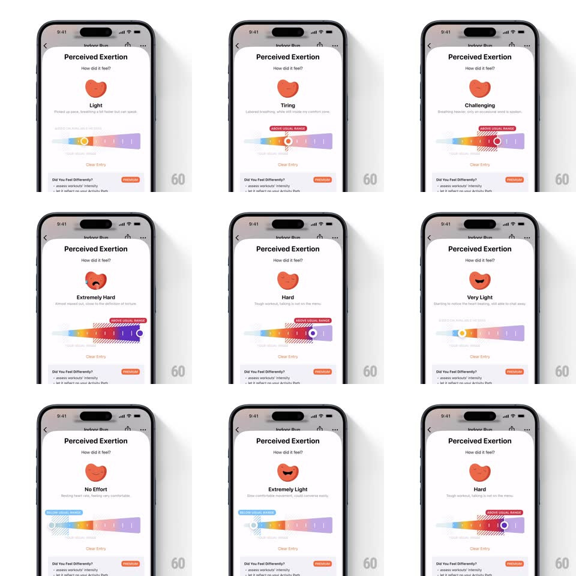

Media
Frame-by-frame

Rebuild this interaction 1:1: Gentler Streak's perceived-exertion slider - drag across a rainbow ramp while the heart mascot morphs through effort faces and a hatched "usual range" band marks where you should land.

Rebuild this interaction 1:1: Gentler Streak's perceived-exertion slider - drag across a rainbow ramp while the heart mascot morphs through effort faces and a hatched "usual range" band marks where you should land.
## Integration
Integration: stack-agnostic spec - springs given as stiffness/damping, timed motions as duration + curve; map every value to your framework and animation library of choice.
## Scene
A "Perceived Exertion" sheet ("How did it feel?"): a heart mascot whose face and color shift with effort (calm at Light, sweaty at Tiring, strained at Hard, dark red at Maximum Effort, serene at Almost Effortless), a one-line description per zone, a horizontal rainbow-gradient slider (blue to purple) with a hatched "USUAL RANGE" band and an "ABOVE USUAL RANGE" pill warning, and a Clear Entry link.
## Motion spec
Pattern: zone-morphing mascot slider.
- Drag: the ring handle tracks 1:1 along the gradient track; the zone label ("Light", "Tiring", ...) crossfades at zone boundaries (150ms) and the description line swaps with a slide-up (120ms).
- The mascot morphs per zone: color hue-rotates along the ramp (continuous with position), while facial features crossfade (eyes squeeze, sweat drop slides in, mouth opens) over 250ms at each boundary; on entering Maximum Effort the heart pulses faster (heartbeat scale 1 to 1.08, 500ms loop vs 900ms at rest).
- The hatched usual-range band stays fixed on the track; when the handle leaves it, the "ABOVE USUAL RANGE" pill pops in above the track (scale 0.8 to 1, spring ~460/22) and shakes once (+-3px, 200ms); it collapses when back in range.
- Release snaps the handle to the zone center (spring ~500/26) and the mascot does a small happy bounce (scaleY 0.9 to 1, spring ~440/20).
- Clear Entry resets: handle slides back to default (300ms), mascot morphs home.
## Calibration
- Five zones evenly split the track; the gradient is continuous, zone changes are discrete - both signals must stay consistent.
- Mascot hue follows handle position smoothly even inside a zone; only the face changes at boundaries.
## Reduced motion
Handle snaps per zone; mascot swaps faces without hue drift.
## Don't miss
- The hatched band is the key contextual element - it communicates "your usual" without text.
- The heart is the app's mascot: rounded, face forward, never a generic emoji.